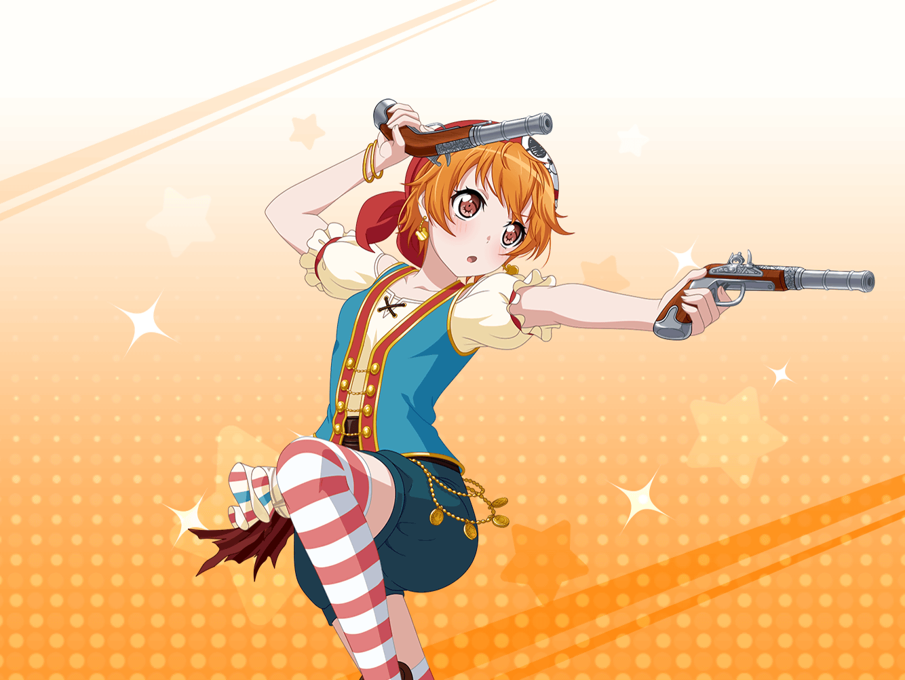

花咲川女子学園 1-A教室
はぐみ
うーん、地図、地図……
どんな地図にしよう……
こころ
はぐみ！ 一緒にお昼を食べましょっ！
はぐみ
あ、こころん！
こころ
今日はとってもいいお天気だから、屋上で食べようと思うの！
美咲が先に行って場所をとってくれてるわ！
こころ
……あら、はぐみ、絵を描いていたの？
はぐみ
うん、美術の先生に余った画用紙をもらったから、
宝の地図を描いてたんだ
こころ
まあ！ ステキじゃない！
でも、どうして宝の地図を描いてるの？
はぐみ
この前のハピハピ島の冒険、すっごく楽しかったよね！
はぐみ
でも、その分行けなかったミッシェルは
寂しい気持ちになってるんじゃないかなって思って……
はぐみ
だからね、はぐみが宝の地図を作って、
今度はミッシェルも一緒に冒険しようと思うんだ！
こころ
そうだったの！
とっても楽しいアイディアね！ きっとミッシェルも喜ぶわ！
こころ
地図はどれくらいで完成しそうなの？
はぐみ
まだ地図のタイトルだけだから、
もうちょっとかかりそう……
はぐみ
まだ宝物を何にするかも、
どこに宝物を隠すかも決まってないんだよ〜
こころ
うーん、宝物を何にするかはとっても大事なことよね！
こころ
見つけた時に、ミッシェルが笑顔になるものがいいと思うわ！
はぐみ
ミッシェルが喜ぶもの……木の実とかハチミツかな？
こころ
最高よ、はぐみ！
クマなら絶対に笑顔になれるものだもの！
はぐみ
あとは宝物の隠し場所を決めないとだねっ！
こころ
それなら、うちの山はどうかしら？
はぐみ
こころんちの山？
こころ
とっても大きい山なのよ！
きっと冒険したら楽しいわ！
はぐみ
それ、すっごくいいと思う！ クマと言えば山だよね！
ミッシェル、遊園地に来たみたいにはしゃいじゃうかも！
はぐみ
あ、そうだ！
それなら宝物は山のてっぺんに埋めないとだね！
こころ
てっぺん？ どうして？
はぐみ
そうすれば、そこに行くまでたくさん山を冒険できるからだよ〜！
はぐみ
ミッシェルと楽しい冒険の思い出、いっぱい作るんだ！
こころ
そんなにステキなことを思いつくなんて、
はぐみは宝地図作りの天才ね！
こころ
うちの山は大きいから、頂上に着くまで１日かかるわ！
その日はミッシェルといっぱい遊べるわね！
はぐみ
いいねいいね！
ミッシェル、山をたくさん登れてきっと大喜びだよ！
美咲
ちょっとこころー。
はぐみ呼びに行くのに時間かかりすぎじゃない？
はぐみ
あ、みーくん！
ごめん、はぐみがこころんのこと引き止めてたんだ
こころ
ちょっと話が盛り上がっちゃったの！
大丈夫、すぐにランチタイムにするわ
美咲
それならいいんだけどー
……で、はぐみは何を描いてるの？
美咲
ん？ なんか『宝の地図』って書いてあるけど……何これ？
はぐみ
えへへ、すっごく楽しいことだよ！
こころ
ええ、ミッシェルの反応が楽しみだわ！
美咲
今のところ、嫌な予感しかしないけど……
ホントに大丈夫？